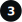
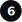

Starting from the Car Park proceed to Point 2 next to Cobbles Café.
Go down by the side to the bridge over the beck, turn left and make your way up the hill to Point 3.  By now your’re on the Cleveland Way for a short while. Along this path you will come to a seating area called “Walkers’ Halt” in memory of a couple who operated a small café who catered for folk walking the Cleveland Way. Carry on the path until you come to Red House Farm. It is at this point you will walk alongside the A174. It is at this point that one should exercise great care as this can be a very busy road. Walk alongside the A174 for about 50 yards and cross to continue along this quiet country lane, turning left over the small bridge at Beck Meetings. Just a little further along there is a seat  to rest a while taking in the view. Continuing along you arrive at Dalehouse, turning left you reach the Fox & Hounds,
 just in time for coffee, beer or wine. Walking up the bank will bring you once again to the A174. Cross and make the first of the left will take you back to the car park, where you began.
just in time for coffee, beer or wine. Walking up the bank will bring you once again to the A174. Cross and make the first of the left will take you back to the car park, where you began.